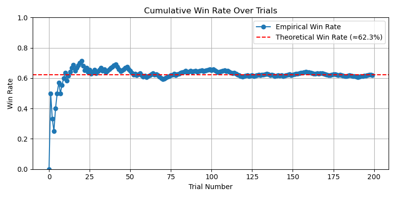
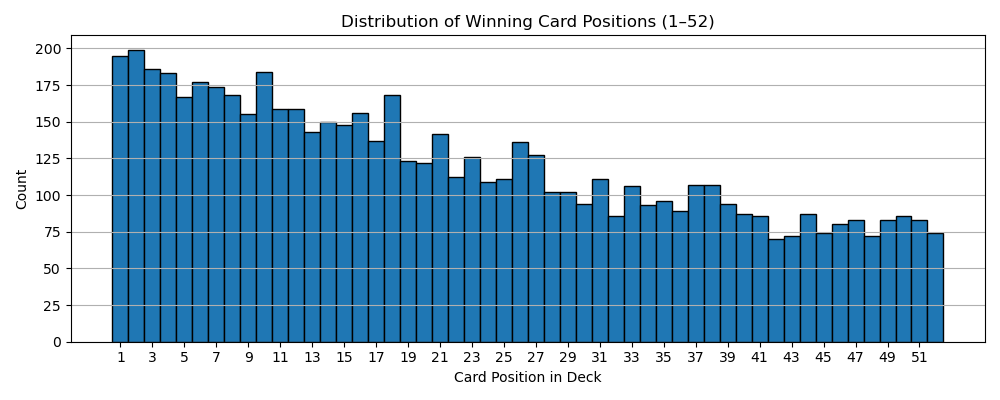

I did all of this for fun, getting inspired from different games I saw in the world.
I've been seeing this game called 'Beat The Deck' on TikTok, played by Highland Bros.
It is a very simple one player card game played with a standard deck of cards, and the rules are as follows: You put 9 cards on the table face up, the rest in a pile face down. Then, you point at an existing card on the table and say either 'higher' or 'lower' (or 'under' and 'over'). You flip the upper card from the pile. Then you compare both of their ranks. For example, if you said 'higher' and the new card's rank is higher than the card's you pointed at, you are right and you place the new card face up on top of the one you pointed at to continue this pile. If you are wrong, you place the card on top and flip the pile upside down, so it becomes inactive. You proceed the same way, pointing at any pile, saying your guess and revealing the next card, and either growing the piles or deactivating them. You win if all cards from the original pile are now distributed into those 9, or lose if all piles get deactivated, but you still have cards left.
I obviously tried playing it myself as well, but I couldn't help but notice I always lose. I tried starting with more than 9 piles, but still noticed I kept losing in most cases. I think the most interesting card games like these are the ones that have around 50% chance of winning, so that you can ask yes/no questions before playing, and then if you lose the game the answer is no, if you win - the answer is yes (obviously, just for fun, not for any important decisions).
I decided to run a few simulations with different algorithms and number of starting piles of this game to see what are the chances of winning in each case and how can I play it to get the 50% chance. I thought of 5 strategies I can test and tested each of them with 9, 10, 11 and 12 starting piles by simulating 1000 games with each.
I want to note that since each time running this game we get different randomized decks, the probabilities also change, but they usually stay in the same range with a difference about 2%.
First I tested the fully random strategy, just to see how it does. It randomly chooses a pile and randomly says higher or lower.
Strategy 1 - Estimated win probability with 9 piles: 0.000
Strategy 1 - Estimated win probability with 10 piles: 0.000
Strategy 1 - Estimated win probability with 11 piles: 0.000
Strategy 1 - Estimated win probability with 12 piles: 0.001
Well, the results weren't that surprising. This is obviously not the way this game should be played.
When I played this game myself, I noticed I use a strategy as follows: I choose the pile that is furthest from the middle value (8), and say accordingly higher, if the card is 2-7, and lower, if the card is 9-A. And if I have only 8's left, I choose randomly.
Strategy 2 - Estimated win probability with 9 piles: 0.071
Strategy 2 - Estimated win probability with 10 piles: 0.147
Strategy 2 - Estimated win probability with 11 piles: 0.284
Strategy 2 - Estimated win probability with 12 piles: 0.470
As we can see, I wasn't wrong, playing with my strategy and original 9 piles only has 7% chance of winning! However, playing the game with 12 piles and this strategy is a great option, as we get 47% chance of winning!
I looked at quite a few videos of Highland Bros, and noticed that the strategy that was used sometimes was almost the same as mine, but they sometimes went randomly on 7 and 9 as well.
Strategy 3 - Estimated win probability with 9 piles: 0.047
Strategy 3 - Estimated win probability with 10 piles: 0.132
Strategy 3 - Estimated win probability with 11 piles: 0.242
Strategy 3 - Estimated win probability with 12 piles: 0.381
Well, the probability of winning obviously is lower. Since they always play with 9 piles, that means that in some of their videos the probability of winning is under 5%! It's also interesting to note that going random on 7 and 9 decreases the chances of winning by quite a lot, for example, by 9% in case of playing with 12 piles.
Obviously, remembering the remainig cards is very useful in many card games. That is why I decided to test out the following strategy. It remembers all the remaining cards in a pile, looks at whether there are more cards over 8 or under 8, and respectively decides whether to say 'higher' or 'lower'. Then, it chooses the best pile in that direction, that is, the smallest card on the table if the guess is 'higher' and the other way around.
Strategy 4 - Estimated win probability with 9 piles: 0.012
Strategy 4 - Estimated win probability with 10 piles: 0.039
Strategy 4 - Estimated win probability with 11 piles: 0.076
Strategy 4 - Estimated win probability with 12 piles: 0.133
As we can see, it didn't perform very well. I think it is because there is quite similar amounts of cards over and under 8 at any time, so this is not very useful information to go off.
This is a strategy that also uses memory, but localizes the last strategy. It remembers all the cards and then checks with each pile, how many cards are left 'higher' and 'lower'. Then, it just picks the pile with the biggest margin and the corresponding direction and guesses that.
Strategy 5 - Estimated win probability with 9 piles: 0.125
Strategy 5 - Estimated win probability with 10 piles: 0.274
Strategy 5 - Estimated win probability with 11 piles: 0.451
Strategy 5 - Estimated win probability with 12 piles: 0.646
As we can see, it performs amazingly well, even crossing the 50% mark with 12 piles. Obviously, in real life it's not very easy to play this way, as this requires unrealistically good memory.
The best way to play this game as a human being is using strategy 2 with 12 piles, since the win probability is around 47%, which is the closest we got to 50%. However, if your memory is exceptionally well and you wouldn't mind remembering all remaining cards and doing lots of comparisons, then strategy 5 with 11 piles is great as well.
While taking a probability course on edX, I stumbled upon the "Montmort's matching problem", and since the result seemed absolutely unbelievable to me, I've decided to try it out myself.
The problem is as follows: "Consider a well-shuffled deck of n cards, labeled 1 through n. You flip over the cards one by one, saying the numbers 1 through as you do so. You win the game if, at some point, the number you say aloud is the same as the number on the card being flipped over (for example, if the 7th card in the deck has the label 7). What is the probability of winning?" (from edX).
Apparently, the probability of this is 62%, which absolutely shocked me so much that I've decided to play the game myself (physically) and see whether that is true. It is known that there is an insane amount of ways you can shuffle the deck and to have a 62% probability of finding one right card seems absolutely unreal.
I took my playing card deck, and then decided that I'm going to call them out in the standard new deck order - ace to king of spades, ace to king of diamonds, ace to king of clubs, ace to king of diamonds. I ended up doing this 40 times and actually won on my first three times and almost cried happy tears. It took me 24 minutes to do the first 20 games + writing down the results, then I took a break, and then it took me exactly 24 minutes again to do the last 20 games.
As we can see, the winning rate dropped below the theoretical 62% after my 18th game and never came back, but it still stayed close enough at around 55%. If I had to guess the approximate rate before playing the game or reading the theory, I would have guessed no more than 5%.

Even though I only played 40 games, I've had winning positions repeat even 3 times. Firstly, it seemed so weird that I keep winning almost instantly, but then I realized that since I only look at the first winning position, winning positions are more likely to be at the beginning of the deck, which might seem counterintuitive at first.
I decided to test it out on a computer as well to see when does it start converging to 62% and how would the winning position distribution look like.
I ran the code with a few different randomly generated decks, and we can see that at 100 games it still wiggles a bit, but it it quite close to the theoretical result after 200 games.
I ran the code with 10000 games to obtain this wonderful distribution of the winning positions and we can obviously see that the winning positions that are closer to the beginning are the most common.
Overall, the theory obviously is right, even though it might seem unbelievable at first. This was a very interesting experiment for me and I really enjoyed playing it.
EGMO 2025 has taken place recently, and the problems were really interesting. After solving a few myself, I decided to test out how different AI models would do at this year's EGMO.
For a positive integer \(N\), let \(c_1 < c_2 < \cdots < c_m \) be all the positive integers smaller than \(N\) that are coprime to \(N\). Find all \(N \geq 3\) such that \( \operatorname{gcd}\left(N, c_i+c_{i+1}\right) \neq 1 \) for all \(1 \leq i \leq m-1\). Here \(\operatorname{gcd}(a, b)\) is the largest positive integer that divides both \(a\) and \(b\). Integers \(a\) and \(b\) are coprime if \(\operatorname{gcd}(a, b)=1\).
The answer to this problem is all even \(N\) and all \(N\) that are powers of 3.
The solution steps are proving that all even \(N\) work, proving that all \(N = 3^m\) work, proving that other numbers don't work.
| Model | Solution | Reasoning | Notes |
|---|---|---|---|
| ChatGPT 4o | üü° all even | ❌ None | Got evens right, no odd case proof |
| ChatGPT o3 | ✅ all even, \(3^k\) | ✅ Strong | Perfect! |
| ChatGPT o4-mini-high | ❌ \(2^a3^b\) | ❌ None | Found examples |
| Claude 3.5 Sonnet | ❌ \(2^k\) | ❌ None | Found examples |
| DeepSeek | ✅ all even, \(3^k\) | ❌ None | Correct answer, no explanation given |
| Grok 2 | ❌ \(p^2\) | ❌ None | Didn't even test cases |
As we can see, only ChatGPT o3 was able to fully solve the problem and provide a proper solution, all the other models would've gotten a 0 on this problem, except possibly DeepSeek getting 1 point for the correct answer and ChatGPT 4o maybe getting 1 point for proving that even numbers work.